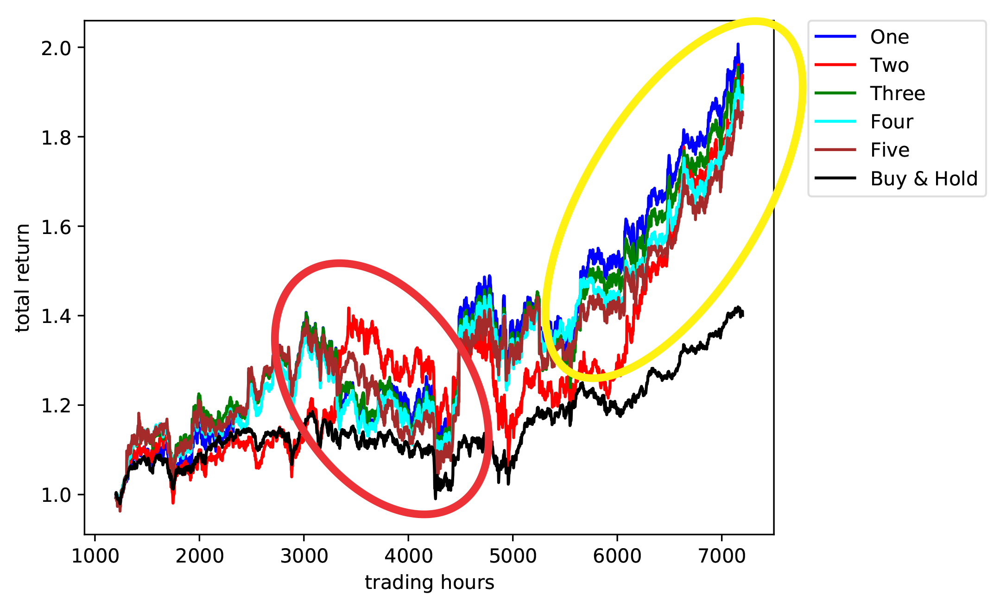

|
I am a Ph.D. Candidate at the University of Toronto, Department of Mechanical and Industrial Engineering. I am working with Professor Chi-Guhn Lee at the Dynamic Optimization & Operations Management Lab. I am funded by the Natural Sciences and Engineering Research Council of Canada (NSERC) – Alexander Graham Bell Canada Graduate Fellowship and by the Fonds de recherche du Québec – Nature et technologies (FRQNT) fellowship. I earned Dual Bachelor and Master Degrees in Engineering Physics, Aerospace Engineering, Astrophysics and Applied Mathematics from ISAE-SUPAERO and Polytechnique Montréal, as well as a Postgraduate Diploma in Innovation Management from HEC Paris. In these programs, I focused on physics, applied mathematics, engineering, and strategy. I worked at the Canada Excellence Research Chair in Data Science for Real-Time Decision-Making (CERC-DS4DM) led by Professor Andrea Lodi. I also worked on an Astrophysics project at the French Alternative Energies and Atomic Energy Commision (CEA-Saclay), a Radiation Oncology Physics at the Cancer University Institute of Toulouse (Oncopole), and a Planetology project related to the MARS InSight Mission at NASA-JPL. Email / CV / Biography / Google Scholar |
ResearchI am interested in the development of new artificial intelligence and quantum computing algorithms for real-world applications. My thesis topic is “High dimensional continuous reinforcement learning for finance”. My goal is to use the financial application domain as a challenging real world environment in which to advance reinforcement learning (RL). My thesis research is about improving reinforcement learning algorithms by exploiting topological properties (symmetries) of dynamical systems and time series data. I am also interested in econophysics problems which involve using quantum field theory and quantum computing to study financial networks and systemic risk. |
Reinforcement Learning |
|
Amine M. Aboussalah, Chi-Guhn Lee In preparation for INFORMS – Mathematics of Operations Research INFORMS Journals We hypothesize that the concept of symmetry augmentation is fundamentally linked to learning. We propose a new representation that enables symmetry augmentation and show that it can enhance any reinforcement learning model. Mathematical background and proofs are presented. |
|
|
Amine M. Aboussalah, Chi-Guhn Lee In preparation for Quantitative Finance Taylor & Francis Online We hypothesize that the concept of symmetry augmentation is fundamentally linked to learning. We propose a new representation that enables symmetry augmentation and show that it can enhance any reinforcement learning model. |
|
|
Amine M. Aboussalah, Chi-Guhn Lee, Ziyun Xu In preparation for Quantitative Finance Taylor & Francis Online We propose a methodology that allows us to assess the quality of the actions taken by the RL agent. This could allow portfolio manager practitioners to better understand the investment RL policy. |
|
|  |
Amine M. Aboussalah, Chi-Guhn Lee Expert Systems with Applications, 2020 ELSEVIER A deep recurrent neural network-based reinforcement learning algorithm is capable of providing continuous control over multiple assets with an objective of maximizing the portfolio return with some financial constraints. |
Other Research Projects |
|
Bouchra Taïb, Amine M. Aboussalah, Mohammed Moniruzzaman, Suming Chen, Norman J. Haughey, Sangwon F. Kim, Rexford S. Ahima, Scientific reports, 2019 Nature Analysis of brain tissues from Glioblastoma multiforme (GBM) patients shows that lipid droplets are highly enriched in tumor tissues while undetectable in normal brain tissues. |
|
|
Amine M. Aboussalah, Christopher Neal, Cahiers du GERAD, 2016 Group for Research in Decision Analysis Global warming is a much discussed topic as it sparks debate for shaping government policy and how humans should behave in reaction to climate change. Global warming can be evaluated with a local perspective by looking at temperature trends in an isolated region. In this work we predict a local warming trend for Canada’s capital city Ottawa, Ontario up to the year 2040 using optimization and machine learning techniques. |
|
|
Alicia López-Oramas, Sylvain Chaty, Alexis Coleiro, Amine M. Aboussalah, Submitted to Monthly Notices of the Royal Astronomical Society, 2015 Published in Astronomy & Astrophysics, 2020 We present the results of the infrared (IR) and optical observations of the counterpart of the black hole (BH) X-ray transient Swift J1745-26 during September 2012 rise and March 2013 decay outburst. We determined the system is a low-mass X-ray binary (LMXB). |
|
|
Amine M. Aboussalah, Tiphaine de Pommereau, Raphaël Leyder, Julien Wagon, Toussaint Wattinne, HEC Paris, 2013 This work aims at understanding the role played by the innovative supply chain strategy put in place by Boeing in the numerous problems encountered by its 787 Dreamliner program. |
Teaching |

{kind=link}
Entrepreneurial |
|
Quantitative research firm applying scientific techniques, AI, and Quantum Computing to find patterns in large, noisy real-world financial data sets. Currently in R&D phase. |
|
Political Risk Consultancy leveraging AI and Quantum Computing to forecast protest-related risk. |
|
Carpooling start-up to address the problematic isolation of regions that are poorly served by public transportation. |